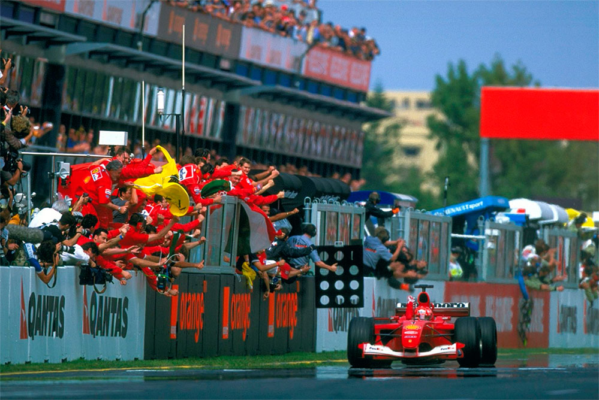
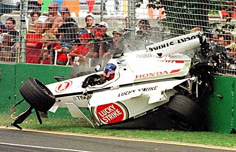
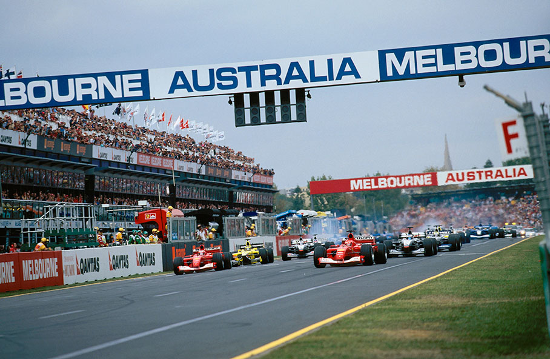
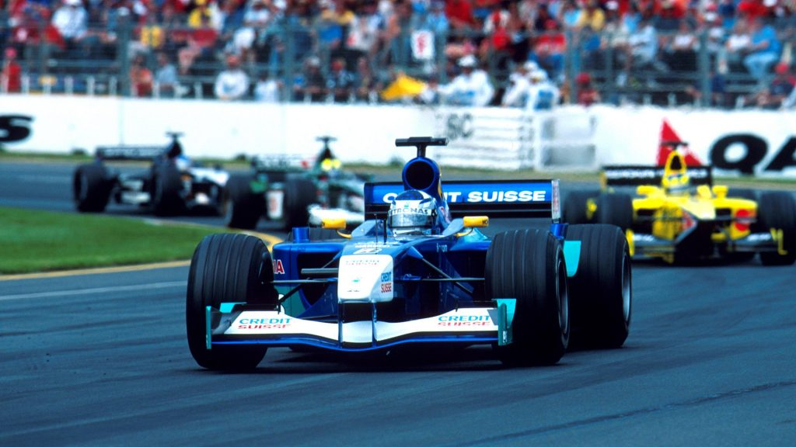
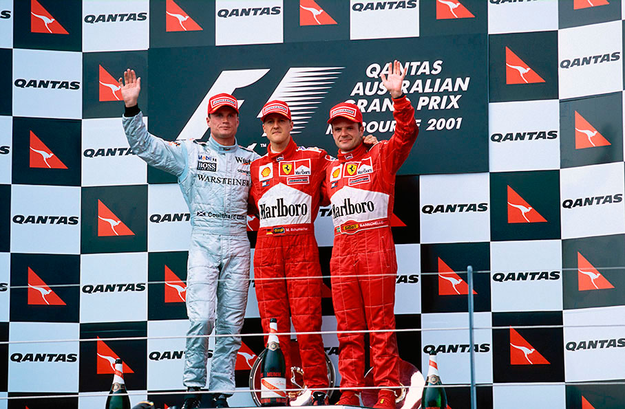
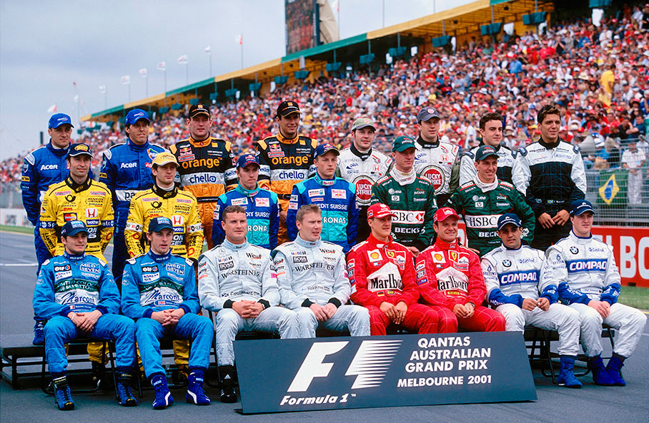

Melbourne - 04/03/2001
PREVISÍVEL E PERIGOSA!

Vitória tranquila de Michael Schumacher e acidentes perigosos, inclusive com a morte de um comissário de pista, marcaram a abertura de uma temporada que parece ser previsível.
POR VENÍCIO ZAMBELLI
O Grande Prêmio da Austrália marcou a abertura do Campeonato Mundial de Fórmula 1 de 2001 com duas certezas. A vitória de Michael Schumacher, com certa tranqUilidade, mostra que o piloto da Ferrari tem tudo para chegar ao tetra-campeonato, tarefa que poderá ser facilitada se seus adversários mais diretos mostrarem, no decorrer do ano, o mesmo nível de distanciamento verificado em Melbourne. A superioridade de Schumacher durante todo o final de semana — a pole foi conquistada com meio segundo à frente de Mika Hakkinen e a vitória foi de ponta a ponta, ficando Coulthard, o 2º colocado na prova, na liderança apenas quando o alemão fez sua parada de box — foi incontestável. Mas a segunda certeza deve ser tratada como prioridade pela Federação Internacional de Automobilismo. Os acidentes foram numerosos e surpreendentes. Apesar dos esforços da FIA para a diminuição da velocidade dos carros, as soluções dos engenheiros e os avanços na construção dos pneus — agora há uma guerra aberta entre Bridgestone e Michelin — mostraram que as novas regras foram insuficientes. Só para se ter uma idéia, o tempo de pole position deste ano, marcado por Schumacher, foi quase quatro segundos menor que o do ano passado. Com a maior velocidade, a menor resistência aerodinâmica prevista pelo regulamento e o bom desempenho dos pneus, os carros ficaram mais ariscos.

Os sérios acidentes na Austrália custaram a vida de um comissário de pista. E o quadro poderia ter sido pior. É claro que as características do traçado australiano contribuíram para os acidentes. Trata-se de um circuito de rua rápido demais para a pouca estrutura de segurança. Mas, de qualquer forma, o quadro é preocupante. Pelo menos quatro pilotos tiveram que ser levados para um exame de rotina no Centro Médico do circuito localizado no Albert Park. O primeiro deles foi Michael Schumacher, que capotou sua Ferrari no treino livre de sexta-feira. O piloto desgarrou em uma curva, pegou uma elevação ao sair da pista e o carro decolou, girando duas vezes no ar e parando de cabeça para cima. Logo ele saiu do carro e nada de grave foi constatado com o piloto, mas foi o bastante para a maior autoridade entre os pilotos manifestar preocupação com a segurança. Um dia depois, no treino classificatório, Luciano Burti teve a suspensão traseira quebrada e seu carro foi lançado contra o muro. Burti também nada sofreu. Mas na corrida, Jacques Villeneuve e Ralf Schumacher proporcionaram um acidente surpreendente e trágico. Depois de acertar a traseira do Williams BMW de Ralf Schumacher, o BAR Honda de Villeneuve levantou vôo e foi direto para um muro, despedaçando-se inteiro. Quando parou, Villeneuve estava atordoado. Mas, naquela hora, um fiscal de pista já estava sem vida, atingido por uma das rodas do BAR, apesar de neste ano mais um cabo de aço estar segurando este componente ao chassi. Outras pessoas que estavam junto ao alambrado ficaram feridas. Mais tarde, por uma falha mecânica, Mika Hakkkinen saiu da pista e se chocou contra a barreira de pneus. Estes fatos levantaram discussões sobre a situação da segurança atual da que estão acontecendo muito atualmente, devido ao novo conjunto técnico de um carro de Fórmula 1. Michael Schumacher disse após a prova que alguma coisa tem que ser modificada, principalmente em relação aos autódromos e às áreas que ficam ao redor da pista. Tanto os pontos de escape quanto o posicionamento dos fiscais de pistas devem ser revistos. No caso de Melbourne, por exemplo, teve-se a confirmação de que o traçado não comporta a atual categoria. O problema é que mesmo considerado circuito de rua, ele possui um desenho como o de um traçado permanente. Só que os muros ficam colados em algumas curvas, não permitindo erros ou falhas — dois itens.

A CORRIDA
Mais uma vez as superioridades da Ferrari e da McLaren foram visíveis logo nas primeiras voltas, com os carros das duas equipes fazendo uma corrida a parte dos demais concorrentes, que vinham bem atrás. Schumacher foi seguido no início da prova por Hakkinen, mas sem ser ameaçado. Aliás, em nenhum momento o piloto da Ferrari nºl sofreu pressão. Heinz-Harald Frentzen, Rubens Barrichello e David Coulthard vinham a seguir. O brasileiro, que havia conseguido o 2º melhor tempo na classificação, não teve uma boa largada e perdeu três posições. Mas foi bastante combativo no início, chegando a ultrapassar de maneira arrojada — e perigosa — o piloto alemão da Jordan. Os dois até se tocaram na manobra, o que acarretou a saída de pista de Frentzen, que voltou em 16º lugar. Mesmo assim, depois de boa recuperação, o piloto ainda conseguiu terminar em 5º lugar na corrida. Mas esta colocação só foi possível devido a uma penalização dada a Olivier Panis, da BAR, após o termino da prova. O piloto francês fez uma excelente corrida em sua reestréia na Fórmula 1, chegando em 4º. Mas por causa de uma ultrapassagem sob bandeira amarela, seu tempo final teve um acréscimo de 25 segundos, jogando-o para a 7ª colocação. Com isso, além de Frentzen ter subido uma posição, Nick Heidfeld, 4º, e Kimi Raikkonen, 6º, também subiram posições, mostrando o bom avanço da equipe Sauber. Com a saída de Hakkinen, depois de uma falha mecânica no seu McLaren, as posições foram mantidas. Quase todos os pilotos optaram por apenas um pit stop e eles aconteceram sem maiores problemas. Assim, Schumacher liderou até o final, seguido por Coulthard, que ultrapassou Barrichello, compondo os três primeiros no pódio.

Os demais não deram muita sorte na corrida. Burti ainda pôde completar a prova, em 8º lugar — bom resultado, tendo em vista que ele sofreu dois acidentes nos treinos. Ele foi o primeiro piloto entre aqueles que usam pneus Michelin. Tarso Marques, da Minardi (que conseguiu permissão para largar mesmo ficando acima dos 107% na classificação), enfrentou problemas com o motor e câmbio logo nas duas primeiras voltas e abandonou. Já Enrique Bernoldi, da Arrows, também ficou de fora logo nas primeiras voltas, após perder o controle do carro devido a uma disputa de posição com Raikkonen, e bater no muro. A decepção ficou para a Williams. Ralf Schumacher acabou envolvendo-se no acidente com Villeneuve e Juan Pablo Montoya teve o motor BMW estourado. Desastrosa também a corrida da Benetton, que ainda não se encontrou para a temporada e teve que ver seus carros andarem atrás da Prost e até mesmo da Minardi de Fernando Alonso, durante a prova.

Eletrônica pela segurança
A FIA aprovou na semana que antecedeu o Grande Prêmio da Austrália algumas mudanças futuras no Regulamento Técnico e Esportivo da Fórmula 1. A maioria das alterações foram feitas visando maior sugurança na categoria. O que houve foi uma liberação do uso de componentes eletrônicos no motor, o que deixa o seu controle mais ligado à computadores do que à sensibilidade do pé do piloto. E algumas delas entrarão em vigor a partir de 16 de abril de 2001, um dia após o Grande Prêmio de San Marino, antes da 5ª etapa da categoria, marcada para a Espanha. A principal modificação vai acontecer no controle de tração, agora liberado. Com este dispositivo, as rodas deixam de girar em falso, o que garante mais eficiência no contorno de curvas e largadas — além das saídas dos pit stops. Apesar de proibido, muitas das equipes já utilizavam um dispositivo parecido desde o ano passado, através de softwares desenvolvidos especificamente para aquela situação. Mas a FIA, responsável pelo monitoramento do uso destes sistemas, não conseguia detectar a irregularidade. Desta forma, os dirigentes de equipes menores acham que a liberação poderá ajudar mais àqueles que não tinham dinheiro para criar estes softwares, do que as equipes de ponta. Haveria assim uma equiparação maior — pelo menos neste item. Outro detalhe importante foi a permissão do uso de câmbio totalmente automático, o que dará fim ao acionamento da embreagem pelo piloto (t)que é feito atualmente nos câmbios semi-automáticos). O limitador de velocidade nos boxes também foi liberado, o que não deixará que os pilotos ultrapassem as velocidades mínimas nestes locais. Mas as maiores mudanças serão aguardadas para os próximos dois anos. Aí sim a eletrônica vai voltar a imperar nos canos de Fórmula 1, eliminando inclusive o Safety Car. Só esperamos que a FIA e as equipes não eliminem os pilotos…
